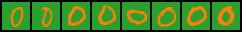
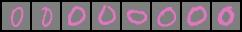

colored MNIST classification¶
We include in the DomainLab package colored verion of MNIST where the color corresponds to the domain and digit corresponds to the semantic concept that we want to classify.
colored MNIST dataset¶
We provide 10 different colored version of the MNIST dataset with numbers 0 to 9 as 10 different domains. The digit and background are colored differently, thus a domain correspond to a 2-color combination. An extraction of digit 0 to 9 from domain 0 is shown in Figure 1.


The available digit-background color combinations together with the domain number are shown in Figure 2. For simplicity we only show examples of the digit 0. Note that for domain 0 we have red in the background and blue for the digit. This exact same colors are also used in domain 3 but reversed with blue in the background and red for the digit. The same can also be seen for the other domains, which also come in pairs.
domain 1: 
domain 2:
domain 3:
domain 4:
domain 5:
domain 6: 
domain 7:
domain 8:
domain 9:
domain generalisation on colored MNIST¶
A particular hard task for domain generalization is, if only a few training domains are available and the test domain differs a lot from the train domains. Here we use domain 0 and 3, from Figure 2, for the training, while choosing domain 1 and 2 for testing as the colors appearing here are far different from the ones used in training.
For our test we like to compare diva and deepall, this was done using the following command prompts:
deepall (Emperical Risk Minimization)¶
python main_out.py --te_d 1 2 --tr_d 0 3 --task=mnistcolor10 --epos=500 --bs=16 --aname=deepall --nname=conv_bn_pool_2 --lr=1e-3 --seed=0 --san_check --san_num=8
diva¶
python main_out.py --te_d 1 2 --tr_d 0 3 --task=mnistcolor10 --epos=500 --bs=16 --aname=diva --nname=conv_bn_pool_2 --nname_dom=conv_bn_pool_2 --lr=1e-3 --seed=0 --gamma_y=1e5 --gamma_d=1e5 --san_check --san_num=8
Results¶
For both algorithms the early stop criterion ended the training. The performance of the trained models on the test domains are summarized in the following table:
method |
epochs |
acc |
precision |
recall |
specificity |
f1 |
auroc |
|---|---|---|---|---|---|---|---|
deepall |
9 |
0.798 |
0.858 |
0.800 |
0.978 |
0.797 |
0.832 |
diva |
16 |
0.959 |
0.961 |
0.958 |
0.995 |
0.958 |
0.999 |
Detailed prompt explanation¶
--te_d 1 2sets the test domain to domain 1 and 2--tr_d 0 3sets the train domain to domain 0 and 3--task=mnistcolor10points the program to a task description containing all information about how and where to the training and testing data is saved as well as about transformations which should be done before training. More about this can be found in doc_task.md.--epos=500sets the maximal number of epos to 500. This value is set sufficiently high such that the training terminates, by using the early stopping criterion, to ensure full convergence for both algorithms.--bs=16sets the batch size t0 16--aname=...specifies the algorithm, in our casedeepallanddiva.--nname=conv_bn_pool_2specifies which network structure should be used as an underlying basis for the algorithms.conv_bn_pool_2is is already implemented into Domainlab, its structure is given by
nn.Sequential(
nn.Conv2d(in_channels=num_of_input_channels, out_channels=32, kernel_size=5, stride=1, bias=False),
nn.BatchNorm2d(num_features=32),
nn.ReLU(),
nn.MaxPool2d(kernel_size=2, stride=2),
nn.Conv2d(in_channels=32, out_channels=64, kernel_size=5, stride=1, bias=False),
nn.BatchNorm2d(num_features=64),
nn.ReLU(),
nn.MaxPool2d(kernel_size=2, stride=2),
)
--nname_dom=conv_bn_pool_2gives the second neuronal network structure, which is only needed for the diva algorithm--lr=1e-3sets the learning rate for the training--seed=0sets a seed for the training--gamma_y==1e5andgamma_d=1e5are hyperparameter of diva--san_checkand--san_num=8are only used to generate the dataset extractions plotted in figure 1 & 2 and to check if the datasets we used for training are correct